1084B engine oil lubrication circuit
- Path
- Descriptions > 10 ENGINE > 1084 ENGINE LUBRICATION SYSTEM > 1084B engine oil lubrication circuit
- Kind
- system description
- Applies to
- engines: 1.6 TS , 1.8 TS, 2.0 JTS, 2.5 V6, 3.2 V6, 1.9 JTD 8v , 1.9 JTD 16v, 2.0 JTS, 2.4 JTD 10v, 2.4 JTD 20v; all production periods
- Interactive page
- https://sloeber94.github.io/elrnDB-a156/en/#/3232858
Applies to: engines: 1.6 TS , 1.8 TS; all production periods
Engine oil pump
The oil is drawn in from the sump by means of the vacuum created by the rotation of the sprockets fitted on the crankshaft.
Vacuum is present between the sprocket separating wall (2) and the oil sump suction pipe.
Pressure instead develops after the separating wall (2) in all the oil delivery pipes (4).
When the pressure exceeds 5 bar, the force exerted on the limiting valve (5) overcomes the reaction of the spring below and moves the valve to open the connecting pipe between the pressure chamber (3) and the low pressure chamber (1).
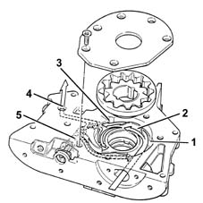
1, Low pressure chamber 2, Separating wall 3, Pressure chamber 4, Oil delivery pipe 5, Pressure limiting valve
Closed operating position of oil pressure limiting valve.
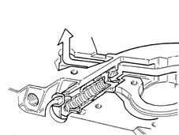
Bypass operating position of limiting valve.
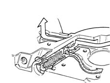
Applies to: engines: 2.5 V6; all production periods
Engine oil pump
The engine lubrication system is pressurized by means of a rotary geared pump fixed at the bottom to the two front bearing caps.
The pump is operated by a "silent" chain which transmits the power from the crankshaft to the actual pump shaft.
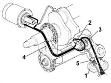
1, Suction pipe 2, Driven gear 3, Drive gear 4, Oil supply duct to filter 5, Oil pressure relief valve
Applies to: engines: 3.2 V6; all production periods
OPERATION
Engine oil pump
The engine lubrication system is pressurized by means of a rotary geared pump fixed at the bottom to the two front bearing caps.
The engine lubrication system is pressurized by means of a rotary geared pump fixed at the bottom to the two front bearing caps.
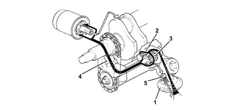
1 - Suction head 2 - Driven gear 3 - Drive gear 4 - Oil supply duct to filter 5 - Oil pressure relief valve
Applies to: engines: 1.9 JTD 8v ; all production periods
Engine oil pump
The oil is drawn in from the sump by means of the vacuum created by the rotation of the sprockets fitted on the crankshaft.
Vacuum is present between the sprocket separating wall (2) and the oil sump suction pipe.
Pressure instead develops after the separating wall (2) in all the oil delivery pipes (4).
When the pressure exceeds 5 bar, the force exerted on the limiting valve (5) overcomes the reaction of the spring below and moves the valve to open the connecting pipe between the pressure chamber (3) and the low pressure chamber (1).
1, Low pressure chamber 2, Separating wall 3, Pressure chamber 4, Oil delivery pipe 5, Pressure limiting valve
Closed operating position of oil pressure limiting valve.
Bypass operating position of limiting valve.
Applies to: engines: 2.4 JTD 10v; all production periods
Engine oil pump
The engine lubrication system is pressurized by means of a rotary geared pump fixed at the bottom to the two front bearing caps.
The pump is operated by means of a "silent" chain (1) which transmits the power from the crankshaft to the pump drive gear (2).
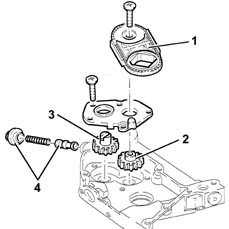
1, Silent chain 2, Drive gear 3, Driven gear 4, Safety valve
Applies to: engines: 2.0 JTS, 2.0 JTS; all production periods
CONSTRUCTION FEATURES
Engine oil pump
The engine oil is drawn in from the sump by means of the vacuum created by the rotation of the sprockets fitted on the crankshaft.
Vacuum is present between the sprocket separating wall (2) and the oil sump suction pipe.
Pressure instead develops after the separating wall (2) in all the oil delivery pipes (4).
The oil pressure in the engine lubrication circuit is 6 bar with the engine warmed up in all operating conditions.
When the pressure exceeds 5 bar, the force exerted on the limiting valve (5) overcomes the reaction of the spring below and moves the valve to open the connecting pipe between the pressure chamber (3) and the low pressure chamber (1).
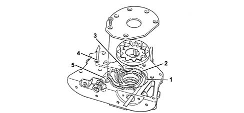
1 - Low pressure chamber 2 - Separating wall 3 - Pressure chamber 4 - Oil delivery pipe 5 - Pressure relief valve
OIL PRESSURE LIMITING VALVE IN CLOSED OPERATING POSITION
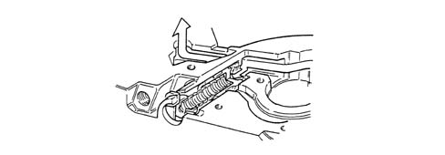
OIL PRESSURE LIMITING VALVE IN BYPASS OPERATING POSITION
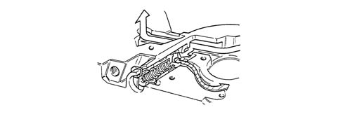
Applies to: engines: 1.9 JTD 16v; all production periods
COMPONENT DESCRIPTION
ENGINE OIL PUMP
The engine oil is drawn in from the sump by means of the vacuum created by the rotation of the sprockets fitted on the crankshaft.
Vacuum is present between the sprocket separating wall (2) and the oil sump suction pipe.
Pressure instead develops after the separating wall (2) in all the oil delivery pipes (4).
When the pressure exceeds 5 bar, the force exerted on the limiting valve (5) overcomes the reaction of the spring below and moves the valve to open the connecting pipe between the pressure chamber (3) and the low pressure chamber (1).
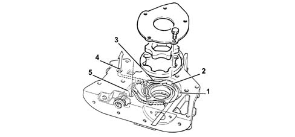
1 - Low pressure chamber 2 - Separating wall 3 - Pressure chamber 4 - Oil delivery pipe 5 - Pressure relief valve
Closed operating position of oil pressure limiting valve.
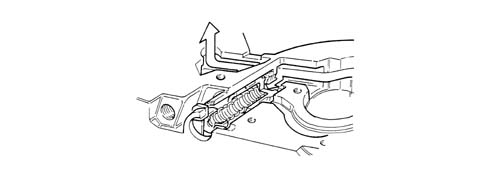
Bypass operating position of limiting valve.
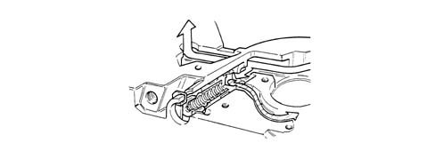
Applies to: engines: 2.4 JTD 20v; all production periods
COMPONENT DESCRIPTION
ENGINE OIL PUMP
Operation
Introduction
The engine lubrication system is pressurized by a geared pump fixed to the front section of the crankcase.
The pump is operated by means of a 'silent' chain (1) which transmits the power from the crankshaft to the pump drive gear (2).
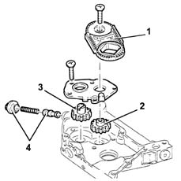
1. Silent chain 2. Drive gear 3. Driven gear 4. Safety and ventilation